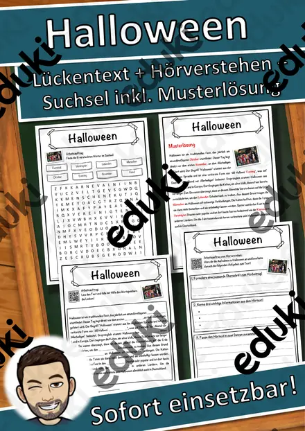
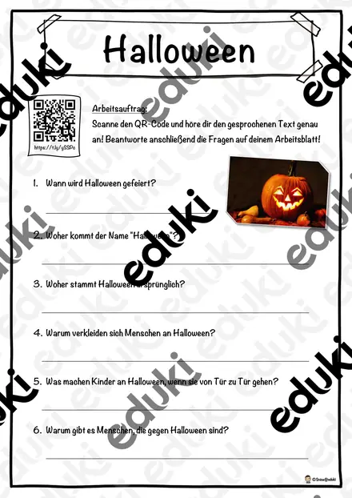
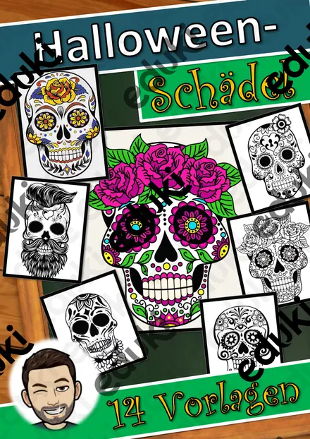

Halloween: Arbeitsblätter für Klasse 2–6 (Sachunterricht)
Halloween ist ein Anlass für kreatives Schreiben, Basteln und Englischunterricht. Der Brauch kommt aus dem keltisch-irischen Raum und ist inzwischen auch in Deutschland verbreitet.
Die Begriffsliste dieser Einheit: Kürbis, Gespenster, Verkleiden, Süßes oder Saures, irische Herkunft und Grusel-Wortschatz.
Die Lehrpläne der Länder sehen das Thema im Fach Sachunterricht vor, in der Regel in den Klassen 2 bis 6. Als Ziel gilt: die Kinder erklären Herkunft und Brauch und gestalten eigene Texte und Bilder.
Ob Vertretungsstunde, Stationenarbeit oder Hausaufgabe: Die Arbeitsblätter zu Halloween lassen sich flexibel einsetzen, etwa mit Kürbis als Auftakt und Grusel-Wortschatz als Abschluss. Musterlösungen sparen die Korrekturzeit. Leistungsstarke und schwächere Lesende erhalten über die Lesespurgeschichten Texte in drei Stufen.
Die Auswahl zum Thema umfasst derzeit 26 Titel, zum Beispiel Halloween: Das große Gemeinschaftsbild, Halloween Traditions in Ireland und Der Kürbis von innen. Dazu zählen 3 Lesespurgeschichten, 1 Lesespaziergang, 10 Bastelvorlagen und 4 Lückentexte mit Hörverstehen für Klasse 1–7. Ein Schreibanlass wie Die Nacht im Spukhaus liefert in einer Stunde erstaunlich viele fantasievolle Texte.
Das gehört zum Thema
Passende Arbeitsblätter und Materialpakete

Halloween Traditions in Ireland – Lesespurgeschichte mit Rätselaufgaben auf Englisch (Klasse 6)

Der Kürbis von innen – Klapp-Kürbis basteln und beschriften, 3-fach differenziert (Halloween/Herbst, Klasse 1/2)

Halloween-Ziehkarten – Präpositionen sichtbar machen: über, vor, neben, auf, 3-fach differenziert (Klasse 1/2, DaZ)

Halloween-Hüpffiguren – 6 Bastelvorlagen mit Federkugel, Steckbrief und Geschichte, 3-fach differenziert (Klasse 1/2)

Halloween Wackel-Skelett – Bastelvorlage, Sachtext Skelett und Knochen beschriften, 3-fach differenziert (Klasse 3/4)

Halloween-Armbanduhr aus Papier – Uhrzeit lernen mit Bastelvorlage, 3-fach differenziert (Klasse 2/3)

Klapp-Spukhaus zu Halloween – Bastelvorlage mit Schreibanlass und Wortspeicher, 3-fach differenziert (Klasse 3/4)

Halloween-Kegelfiguren – Körper Kegel basteln und erforschen, 3-fach differenziert (Mathematik/Kunst Klasse 3/4)

Halloween-Handpuppen – Bastelvorlage mit Sachtext und Puppentheater, 3-fach differenziert (Klasse 1/2)

3D-Anhänger Halloween – Oktaeder, Diamant und Kugel zum Ausmalen und Basteln, 3-fach differenziert (Klasse 3/4)

Spiral-Gespenster zum Aufhängen – Halloween-Bastelvorlage mit Lesetext, 3-fach differenziert (Klasse 2/3)

Lesespaziergang: Halloween-Nacht im Kürbisgarten – 3-fach differenziert (★/★★/★★★), Klasse 2–4

Halloween – woher das Fest kommt und wie man es in Irland feiert – Lesespurgeschichte mit Rätselaufgaben (Klasse 3)

Der Kürbis – Lesespurgeschichte mit Rätselaufgaben (Klasse 3)

Hexe Lückentext mit Wortspeicher Hörverstehen und Suchsel

Halloween Lückentext mit Wortspeicher Hörverstehen und Suchsel

Kürbisse Lückentext mit Wortspeicher Hörverstehen und Suchsel

Monster Lückentext mit Wortspeicher Hörverstehen und Suchsel

Halloween: Das große Gemeinschaftsbild – 30 Felder, ein Kunstwerk für die ganze Klasse

Halloween Taschenlampen-Rätsel „Was steckt im Glas?“ – Sätze mit ein/eine schreiben, 3-fach differenziert (Klasse 1/2)

Halloween-Rätselpuzzle Einmaleins – Gespenst, Fledermaus, Katze und Kürbis, 3-fach differenziert mit Selbstkontrolle (Klasse 2/3)

Mein Halloween-Mitmachheft – Rätseln, zählen, lesen, schreiben, 3-fach differenziert (Klasse 1–2)

Halloween - Hörverstehen

Halloween-Schädel - Kunst - Tag der Toten - Día de Muertos
Weitere 2 Materialien zum Thema im Material-Finder.
Häufige Fragen
Für welche Klassenstufe passen die Arbeitsblätter zu Halloween?
Passend sind Klasse 1–7. Von den 26 Titeln wenden sich die meisten an Klasse 3, einige lassen sich differenzierend auch in benachbarten Stufen nutzen.
Welche Inhalte decken die Materialien zu Halloween ab?
Inhaltlich reicht die Auswahl von Kürbis über Gespenster und Verkleiden bis zu irische Herkunft; Details stehen bei den einzelnen Materialien.
Wie setze ich Halloween im Unterricht ein?
Ein Schreibanlass wie Die Nacht im Spukhaus liefert in einer Stunde erstaunlich viele fantasievolle Texte. So entsteht aus den Blättern eine kleine Einheit, die sich auf zwei bis drei Stunden verteilen lässt.
Mehr Material nach Fach und Klasse
- Alle Materialien Kunst
- Arbeitsblätter Kunst Klasse 2
- Arbeitsblätter Kunst Klasse 3
- Arbeitsblätter Kunst Klasse 4
- Arbeitsblätter Kunst Klasse 5
- Arbeitsblätter Kunst Klasse 6
- Unterrichtsmaterial Klasse 2
- Unterrichtsmaterial Klasse 3
- Unterrichtsmaterial Klasse 4
- Unterrichtsmaterial Klasse 5
- Unterrichtsmaterial Klasse 6
Verwandte Lehrplanthemen
- Obst, Gemüse und Ernte (Sachunterricht, Klasse 1–4)
- Bauernhof und Nutztiere (Sachunterricht, Klasse 1–4)
- Berufe und Berufswahl (Sachunterricht, Klasse 1–10)
- Dinosaurier und Urzeit (Sachunterricht, Klasse 1–5)
- Geld und Konsum (Sachunterricht, Klasse 2–10)